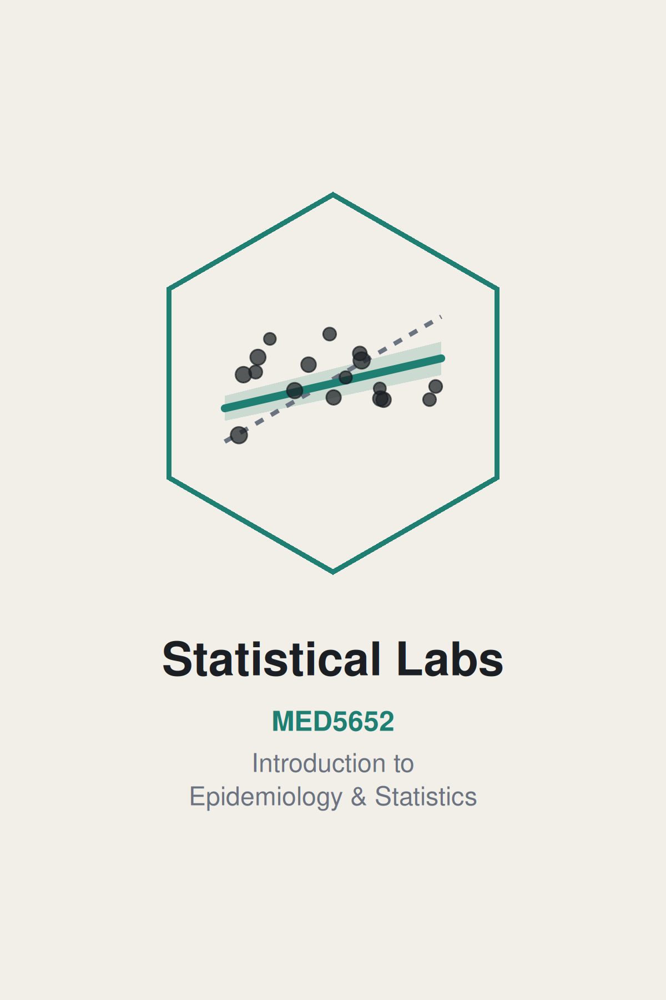

IES Statistical Practicals
Introduction

What this book is
This is a companion ebook for the statistical practicals of the course MED5652 Introduction to Epidemiology and Statistics for UofG MPH students. The principles and theories of statistics are taught in the seminars. This ebook, and the practical sessions, are to apply that knowledge in epidemiology and statistics to real data using R.
The first two preparatory sessions help us ease into the analysis environment. R is primarily a programming language, so there is usually a steeper learning curve. We need to get familiar and comfortable with communicating with the computer using text commands, rather than through interacting with a mouse. However, this ebook and the practical are set up for complete beginners. No prior data analysis or programming experience is expected. From Week 7 on, every practical picks up from the theories taught in the seminars, but it doesn’t replace the seminar’s content. Think of the seminar as where an idea is introduced, and the practical as where we actually do it, in R, on real data.
Where this book sits against the module’s outcomes
MED5652 as a whole has four intended learning outcomes. By the end of the course, you will be able to:
- Critically assess the role of epidemiology and statistics within public health.
- Critically appraise key concepts in epidemiological design.
- Critically appraise and apply key statistical methods.
- Critically appraise and evaluate the concept of causality within public health literature.
This book is built primarily to get us through ILO 3. Along the way, it also touches ILO 1, since statistics only matters here because of the public health decisions it informs, and ILO 4, to explore causality using statistical methods.
Structure of the book
Two parts. Firstly, two preparatory practicals, worked through before seminars on statistics:
| IES week | What it covers |
|---|---|
| 4 | R and R Studio |
| 5 | Data and data handling |
Week 6 is reading week, so there’s no teaching. Then five weekly practicals, one per statistics week, each following that week’s seminar:
| IES week | What it covers |
|---|---|
| 7 | Describing and visualising data |
| 8 | Estimation, precision, and study size |
| 9 | Hypothesis tests and measures of association |
| 10 | Correlation and simple linear regression |
| 11 | Multiple linear and logistic regression |
All weeks are interconnected, so please attend all classes. Missing one class would mean you lose the foundation of the next, with a knock-on effect on your overall learning. If you really can’t attend a class, please make sure you read and work through the relevant chapter in the ebook before the next class.
To illustrate how each week is linked: Week 7 describes a variable, e.g. a health outcome. Week 8 attaches a confidence interval to that health outcome, so we can say how precise the estimation is. Week 9 tests whether the health outcome differs between populations. Week 10 tells us whether the health outcome could be explained or described by another variable, as a regression model. Lastly, Week 11 expands that regression model so we can do simple causal inference, e.g. by mitigating confounding bias, as covered in the epidemiology classes.
Structure of a chapter
Every chapter in this book follows the same structure, so once we’ve worked through one, we know what to expect from the rest. It opens with a short list of intended learning outcomes, then a setup chunk that reads in the data. After that comes the content itself, worked through with code and output, followed by a full worked example that puts several pieces together at once. Numbered exercises come next, each one tied to a specific ILO. Each of the five weekly chapters then ends with a writing exercise: a short results-section paragraph, rather than just a calculation. The statistics assessment is a structured question and answer, combining analysis with written interpretation, and the writing exercises are deliberate practices for that.
The preparatory chapters (Weeks 4-5) work a little differently: each includes multiple-choice questions instead, aimed at the places R’s syntax most often trips people up, and Week 5 has a small writing exercise as well. Solutions to the numbered exercises, the self-checks, and the writing exercise usually sit in a collapsed section at the very end of each chapter. The five weekly chapters also carry the ‘Try it yourself’ box, which is a prompt to change one thing in code we’ve just run and see what happens. Those don’t have written answers.
The two datasets
Almost everything in this book runs on one of two datasets. nhanes_mph is a curated extract of real health survey data in the US, linked to mortality records. Week 5 reads it in for the first time and gets us comfortable with it as data; Week 7 introduces it properly and is where it becomes the dataset the rest of the book runs on. strep_tb, from the medicaldata package, is the 1948 MRC streptomycin trial, a historic randomised controlled trial, used from Week 8 onward wherever a binary outcome and a genuine trial design are useful. Both get introduced properly, in context, the first time that matters.
Boundary of the ebook/IES course
This book gets you to a working, applied floor in statistics for an MPH graduate. It is not a complete statistics education. Several real techniques are left out on purpose. Our data carry a death indicator and a follow-up time, for instance, and Week 11 uses them to build a fixed-window mortality outcome, but proper survival analysis will only be covered in the Advanced Statistics course. Testing for mediation, moderation/interaction, choosing between competing regression models, and handling missing data properly are all left out too. Treat every one of those signposts as a real boundary, not a gap in this book you’re expected to fill in yourself. Week 11 closes with the full list, once you’ve met enough of the material for it to mean something.
How to actually use it
Work through the chapters in order. Each one assumes you’ve already met all the prior ILOs, and later chapters build on earlier code without re-explaining it. Attempt the exercises yourself before you open the solutions. Work along in a script of your own as you go, the same way Week 5 has you try a line in the console, move it into a script once it works, then restart R and re-run the whole thing to prove it’s genuinely self-contained. And keep this book open for the rest of the module, not just read once and set aside. It stays the reference you come back to whenever you need a reminder of how something works.